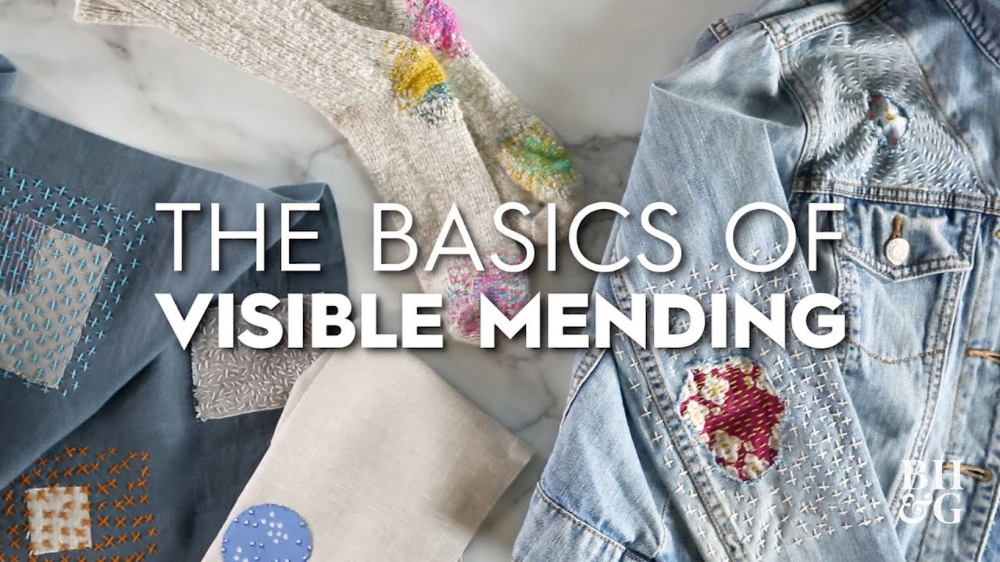

Visible Mending: Patching and Embroidery
Sustainable Stitches Series Sponsored by Sul
Visible Mending: Patching and Embroidery
Visible mending is a technique used for repairing textiles that highlights the beauty of mending. Instead of trying to hide the repair, we allow fabric and thread to show the history, change, and importance of our beloved garments. In this tutorial, Brenda K.B. Anderson will focus on combining patchwork with running stitches and embroidery, to patch holes and cover stains.
Visible mending adds beauty and value to our pieces and is also a vital step toward reducing waste. By continuing to care for our clothing, we are keeping textiles from ending up in a landfill and reducing consumption of new clothing.
Featured Sulky Products:
- German Wooden Embroidery Hoop 6″
- Stick ‘n Stitch™ – 8 1/2″ x 11″ – 12 Printable Sheets
- 12 Wt. Cotton Petites Thread: Brights Sampler and Bright White
- 12 Wt. Cotton Thread: Rosewood Manor – O’ Feathers Petites Sampler and Pansies and Periwinkle Cross Stitch Sampler
Step-by-Step Guide for Visible Mending: Patching and Embroidery
Step 1: Prepare Your Garment
Choose the garment you wish to mend, such as a torn shirt or pair of jeans. Ensure the fabric around the tear or damage is clean and free from any dust or lint.
Step 2: Select and Cut a Patch
From your fabric stash, cut a patch that is slightly larger than the hole or damaged area. You can choose a fabric that complements or contrasts the original fabric for added visual effect.
Step 3: Use Stick ‘n Stitch™ for Design
Stick ‘n Stitch™ Sheets are perfect for transferring embroidery designs to your patch. Choose a design or create your own. If you're new to embroidery, simple running stitches or cross-stitch patterns work well.
Instructions:
Print your chosen design onto the Stick ‘n Stitch™ sheet.
Cut out the design and place it over the patch.
Use the embroidery hoop to secure both the patch and the fabric to keep everything taut while you work.
Step 4: Secure the Patch with the Embroidery Hoop
Place the German Wooden Embroidery Hoop 6″ around the area where you will be working. The hoop keeps the fabric tight and makes stitching easier. Adjust the fabric until it is snug and smooth inside the hoop.
Step 5: Start Patching with Running Stitches
Using your chosen 12 Wt. Cotton Petites Thread, you can start sewing the patch onto the garment. Begin by outlining the hole with a simple running stitch or sashiko stitching to secure the patch.
Use the Brights Sampler threads for a bold contrast against your garment, or use Bright White for a subtle and delicate stitch. The 12 wt. cotton thread provides a bold finish, making your mending visible and stylish.
Step 6: Add Decorative Embroidery (Optional)
Once the patch is secured, you can add decorative embroidery for an artistic touch.
Use the Rosewood Manor – O’ Feathers Petites Sampler and Pansies and Periwinkle Cross Stitch Sampler threads for intricate designs around the patch. Try stitching floral or geometric patterns to enhance the look of the mending and make it stand out as part of the garment’s design.
Step 7: Final Touches
Once you have finished the patch and embroidery, trim any excess thread and remove the Stick ‘n Stitch™ backing carefully.
Press the garment gently to set the stitches in place and smooth out any wrinkles from the fabric.
Step 8: Enjoy Your New Piece!
Your visible mending patch should now not only repair the damage but also add a personalized, decorative element to your clothing. The bold stitches and contrasting fabric make it a statement piece!

Share tips, start a discussion, or ask one of our experts or other students a question.